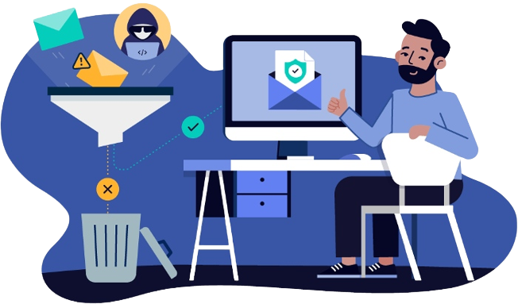

Learn About The Benefits Of Dmarc
And How It Can Help Your Email Security
DMARC is a protocol that helps protect your email reputation. It helps prevent email traffic from going to the wrong mail servers by verifying that an email message is legitimate and from a trusted sender. DMARC is used primarily to authenticate email coming into the organization, but it also helps with outbound email delivery verification.
What is the DMARC scam?
DMARC is a cool email technology. It primarily serves as an e-mail authentication protocol designed to enable email domain registration holders to protect their domains from unauthorized use.It is important because it provides three significant advantages.
First Benefit of DMARC: Reporting

An automated reporting system makes it possible for organizations and domain owners to learn about email messages they're sending across the web. The reporting system with DMARC gives you information that you cannot find anywhere else.
It creates a holistic overview of the messages received on behalf of a company and its domains, giving you insights about them.
- The number of messages being authenticated correctly.
- Which are not being authenticated.
- Which of the messages are originating from.
- Who's receiving these emails?
This data is valuable for businesses and IT departments and helps them make better decisions about what they're doing with email communications.
Second Benefit of DMARC: Control
DMARC gives businesses control using a DMARC policy that instructs mailbox providers and receiving email systems about how to handle email from that domain or organization but does not have email authentication technologies applied.
Email has a long and illustrious history of spam and spoofing, and authorities have little control over what degree of this goes on. Well, DMARC is the answer for that problem. It enables organizations requiring control and delivers a significant advantage when it comes to security.
Third Benefit of DMARC: Security
The third advantage of DMARC is increased security.
The power of DMARC is the reason why it is such a solid platform for the security of your email messages. Having control of your messages' flow, you are better able to control their trustworthiness and value.
DMARC is once again adding value to your business in more ways than ever.
- It's providing you with these reporting and analytics insights.
- It provides you with the power to set controls and policies about what happens to your e-mail messages.
- And it will give you this value out of faith in protection.
DMARC is indispensable for three main reasons.
1. Keep product emails secure
When an action activates a Jira email, DMARC helps prevent phishing and domain name spoofing by using two existing email addresses authentication mechanisms, Sender Policy Framework (SPF) and DomainKeys Identified Mail (DKIM).
A phishing email may resemble it came from your organization because it includes content your readers expect to see. In the case of Domain spoofing, the phishing email may appear trustworthy because the sender's domain includes addresses your users or customers would expect.
This email content may ask you to enter sensitive or dubious information or download harmful software. In addition, cases of phishing and spoofing have an impact on your company's public standing by negatively affecting public perception and trust.
2. Improve email delivery rates
DMARC improves the likelihood that your users and customers will receive all messages sent by Atlassian systems.
Email servers are more likely to mark any other emails marked spam as spam if your recipients mark incoming emails as spam. These emails are usually from Atlassian.
In conclusion, DMARC reduces email spoofing attacks, so businesses can deploy DMARC for email authentication. Spam is removed from mail streams, so users don't have to find new ways to filter out unwanted messages. DMARC also improves email reputation, so users get better delivery rates. Finally, DMARC helps businesses make their messages faster and reliable. DMARC replaces complex email security settings with one simple configuration. DMARC also reduces the reaction time of email providers, so businesses are able to contest fraudulent emails faster.